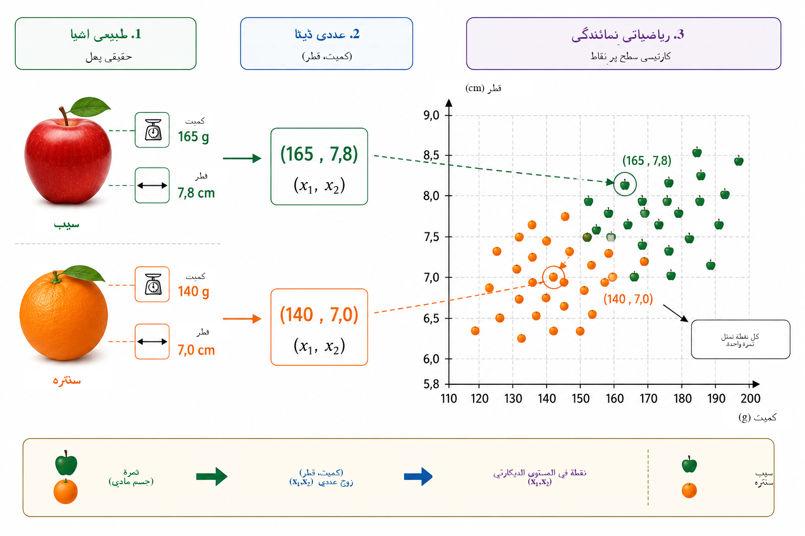
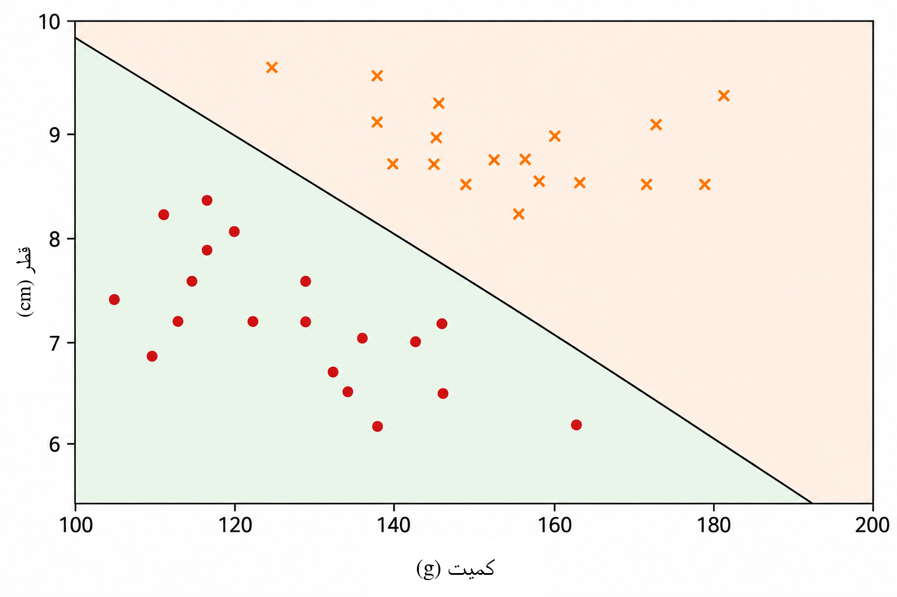
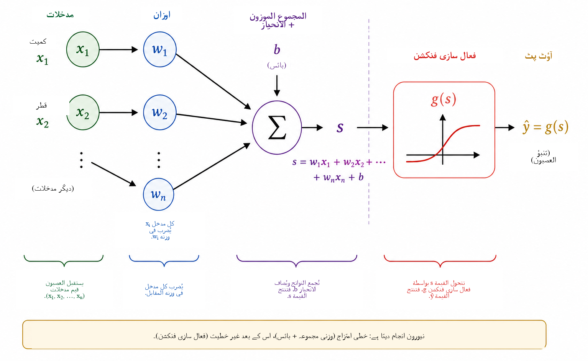
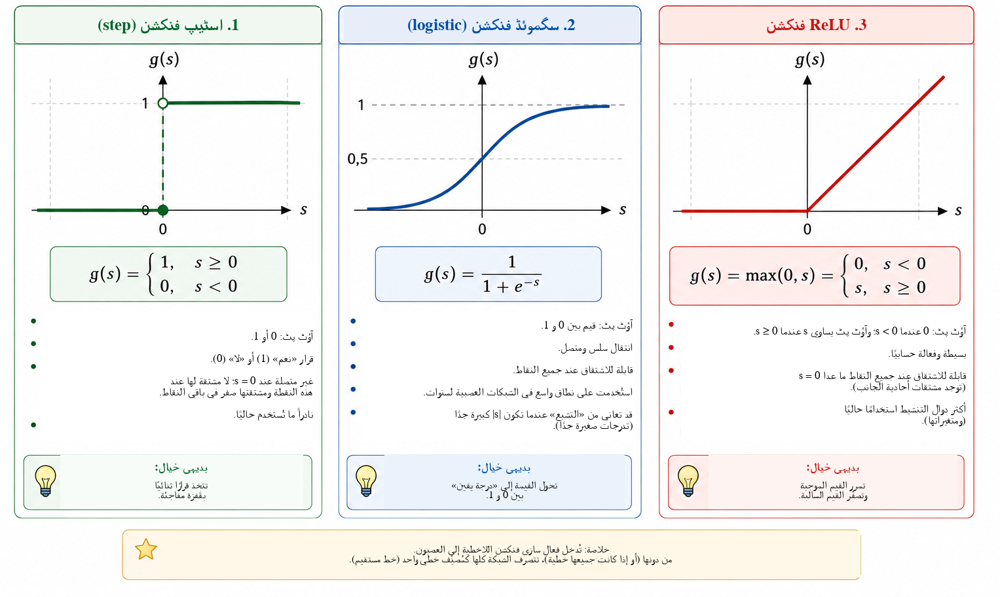
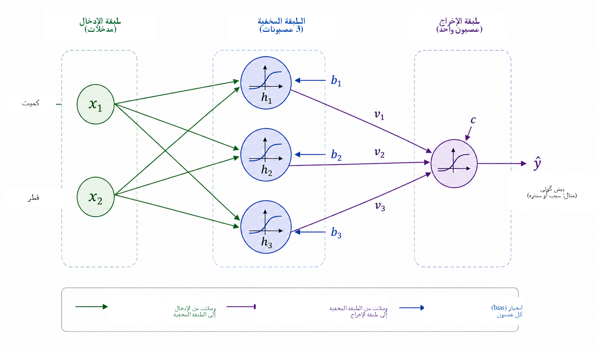
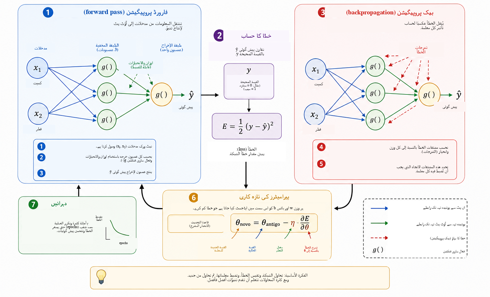
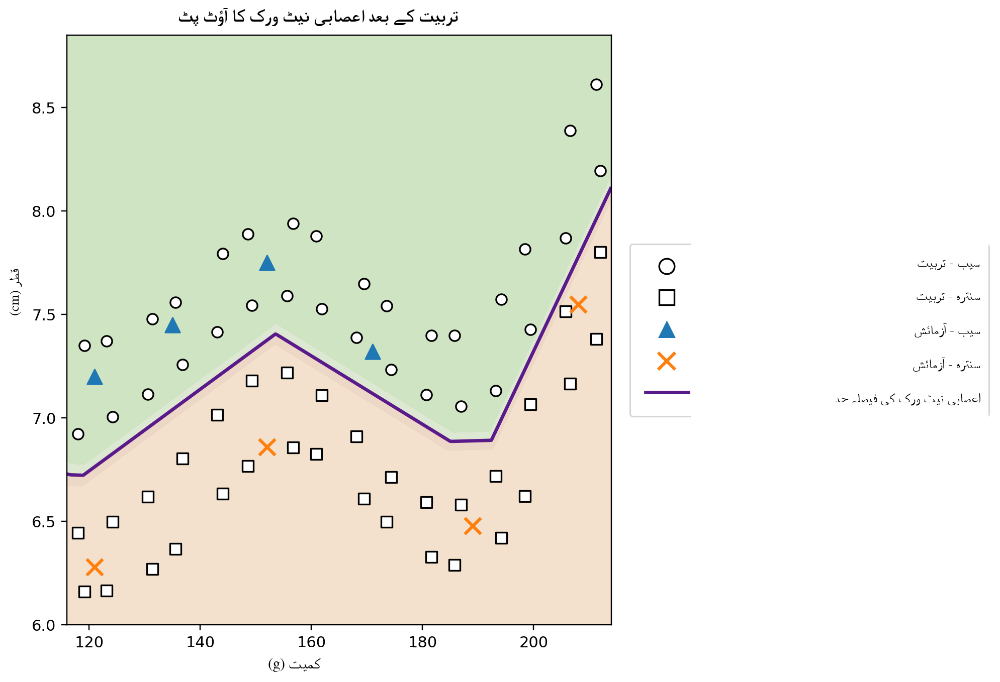

کمپیوٹر کب سیکھ سکتا ہے؟
روزمرہ زندگی میں ہم تقریباً غیر محسوس طور پر درجہ بندی کے فیصلے کرتے رہتے ہیں۔ کسی پھل کو دیکھ کر ہم فوراً پہچان لیتے ہیں کہ وہ سیب ہے یا سنترہ؛ فون پر پیغام آنے پر ہم حقیقی گفتگو کو ناپسندیدہ اشتہار سے الگ کرتے ہیں؛ طبی تجزیے میں کئی پیمائشوں کو ملا کر کسی فیصلے کی مدد کی جا سکتی ہے؛ اور مالیاتی اداروں میں قرض دینے سے پہلے متعدد معلومات کا جائزہ لیا جاتا ہے۔ ان سب مثالوں میں جواب پیدا کرنے کے لیے کئی خصوصیات کو ایک ساتھ دیکھا جاتا ہے۔
بہت سے روایتی کمپیوٹر پروگراموں میں وہ قواعد جن سے جواب پیدا ہوتا ہے، پروگرامر واضح طور پر لکھتا ہے۔ جب قواعد معلوم ہوں اور انہیں صاف انداز میں بیان کیا جا سکے تو یہ طریقہ اچھا کام کرتا ہے۔ لیکن جب ڈیٹا بہت متغیر ہو، یا اچھے فیصلے کے لیے درکار تمام شرائط پہلے سے لکھنا دشوار ہو، تو یہ طریقہ کم مؤثر ہو جاتا ہے۔ اس سے ایک فطری سوال پیدا ہوتا ہے:
کیا ہم ایسا پروگرام بنا سکتے ہیں جو فیصلہ کرنے کا قاعدہ پہلے سے حاصل کرنے کے بجائے مثالوں سے سیکھے؟
یہ مشین لرننگ کے مرکزی تصورات میں سے ایک ہے، جو مصنوعی ذہانت کا وہ شعبہ ہے جس میں ڈیٹا سے ماڈل موزوں کرنے کے طریقوں کا مطالعہ کیا جاتا ہے ۔ زیرِ نگرانی سیکھنے کے مسئلے میں الگورتھم کو درست جوابات کے ساتھ مثالیں دی جاتی ہیں، اور ہم ایسا ماڈل تلاش کرتے ہیں جو تربیت میں استعمال نہ ہونے والے معاملات کے لیے بھی مفید پیش گوئیاں کر سکے۔ اس مقصد کے لیے بنائے گئے بہت سے ماڈلز میں مصنوعی اعصابی نیٹ ورکس تصویر شناسی، زبان کی پروسیسنگ، سگنل تجزیے اور زمانی سلسلوں کی پیش گوئی جیسی تطبیقات میں اہم ہو چکے ہیں ۔
اعصابی نیٹ ورکس کو ریاضی، کمپیوٹنگ اور اسکولی تعلیم کے درمیان پل کے طور پر استعمال کرنے پر Batista اور Martins نے Professor de Matemática Online میں پہلے ہی بحث کی ہے ؛ انہوں نے اساتذہ کی تربیت، Python اور ہندسوں کی شناخت پر مشتمل ایک سرگرمی پیش کی۔ موجودہ مضمون ایک تکمیلی راستہ اختیار کرتا ہے۔ ہمارا بنیادی مقصد ایک چھوٹے اعصابی نیٹ ورک کی اندرونی ریاضی کو واضح کرنا ہے: تحلیلی ہندسہ سے آغاز کرتے ہوئے قدم بہ قدم گریڈینٹ کے حساب اور بیک پروپیگیشن کی دستی تنفیذ تک پہنچنا۔
جدید تطبیقات کی پیچیدگی کے باوجود، اعصابی نیٹ ورک کا ریاضیاتی جوہر نسبتاً مانوس تصورات سے متعارف کرایا جا سکتا ہے۔ بنیادی سطح پر اعصابی نیٹ ورک فنکشنز کا ایک مرکب ہے جس کے پیرامیٹرز ڈیٹا سے ایڈجسٹ کیے جاتے ہیں۔ ہم ایک سادہ ہندسی مسئلے سے شروع کرتے ہیں، جدا کرنے والی لکیر کو مصنوعی نیورون کے طور پر دوبارہ تعبیر کرتے ہیں، کئی نیورونز کو جوڑتے ہیں، فعال سازی فنکشنز کے کردار کا مطالعہ کرتے ہیں، اور دکھاتے ہیں کہ مشتقات نیٹ ورک کے پیرامیٹرز کو خودکار طور پر ایڈجسٹ کرنے کے لیے کیسے استعمال ہو سکتے ہیں۔ آخر میں ہم Python میں ایک مکمل مگر چھوٹی مثال نافذ کرتے ہیں، جس میں مساوات اور کوڈ کے درمیان براہ راست مطابقت برقرار رہتی ہے۔
مسئلے کی ریاضیاتی نمائندگی
اعصابی نیٹ ورک کے کام کرنے کے طریقے کو سمجھنے کے لیے ہم جان بوجھ کر ایک سادہ مسئلے سے آغاز کرتے ہیں: سیب اور سنترے میں فرق کرنا۔ کسی پھل کی بہت سی خصوصیات اس کام کے لیے مفید ہو سکتی ہیں، مثلاً رنگ، کمیت، قطر، بناوٹ اور خوشبو۔ تاہم ابتدائی ریاضیاتی ماڈل میں یہ تمام پیچیدگی شامل کرنا ضروری نہیں۔ ہم صرف دو ایسی مقداریں استعمال کریں گے جنہیں آسانی سے ناپا جا سکتا ہے: کمیت، گرام میں، اور قطر، سینٹی میٹر میں۔
لہٰذا ہر پھل کو ایک مرتب جوڑے سے ظاہر کیا جائے گا \[(x_1,x_2),\] جہاں \[x_1=\text{کمیت} \qquad\text{اور}\qquad x_2=\text{قطر}.\]
پس جوڑا \((155,\;7.2)\) ایک ایسے پھل کی نمائندگی کرتا ہے جس کی کمیت \(155\) g اور قطر \(7.2\) cm ہے۔ طبعی شے کی جگہ دو عددی پیمائشیں رکھ کر ہم ہر پھل کو کارتیسی سطح پر ایک نقطے سے وابستہ کرتے ہیں: پہلی محدد کمیت اور دوسری قطر بتاتی ہے۔ شکل 1 فرضی سیبوں اور سنتروں کے ایک مجموعے کے لیے اس نمائندگی کو دکھاتی ہے۔

یہ تبدیلی مسئلے کی ظاہری نوعیت بدل دیتی ہے۔ سیب یا سنترے کو براہ راست پہچاننے کا سوال پوچھنے کے بجائے ہم ایک ہندسی سوال پوچھ سکتے ہیں: دونوں جماعتوں سے تعلق رکھنے والے نقاط کو سطح میں کیسے جدا کیا جا سکتا ہے؟ زاویۂ نظر کی یہ تبدیلی مشین لرننگ میں بنیادی اہمیت رکھتی ہے۔ تصاویر، متون، آوازیں اور تجرباتی سگنلز کسی الگورتھم کے ذریعے پروسیس ہونے سے پہلے عددی نمائندگیوں میں تبدیل کیے جانے چاہییں۔ ہماری مثال میں ہر شے کی صرف دو محدد ہیں؛ حقیقی تطبیقات میں ایک نمائندگی سینکڑوں، ہزاروں، بلکہ لاکھوں اجزا پر مشتمل ہو سکتی ہے۔ اصول وہی رہتا ہے: ہر مثال کو اعداد کے ایک مجموعے سے وابستہ کیا جاتا ہے، اور ماڈل ایسا قاعدہ تلاش کرتا ہے جو اس نمائندگی کو مطلوبہ جواب سے ملائے۔
ہم سب سے سادہ دستیاب ہندسی قاعدے سے آغاز کرتے ہیں اور پوچھتے ہیں کہ کیا ایک واحد سیدھی لکیر سیب کے نقاط کو سنترے کے نقاط سے مناسب طور پر جدا کر سکتی ہے۔
سیدھی لکیر بطور درجہ بند
جب ہر پھل کو کارتیسی سطح پر ایک نقطے سے ظاہر کر دیا جائے تو درجہ بندی ایک ہندسی مسئلہ بن جاتی ہے: کیا ایک سیدھی لکیر سیبوں کو سنتروں سے جدا کر سکتی ہے؟ یہ سوال مشین لرننگ کے ایک اہم خاندان، جسے خطی درجہ بند کہا جاتا ہے، کے بنیادی تصور کو بیان کرتا ہے۔
ڈیٹا کے بادل کو کاٹتی ہوئی ایک لکیر پر غور کریں، جیسا کہ شکل 2 میں دکھایا گیا ہے۔ یہ لکیر سطح کو دو نصف سطحوں میں تقسیم کرتی ہے۔ اگر زیادہ تر سیب ایک طرف اور زیادہ تر سنترے دوسری طرف ہوں، تو کسی نئے پھل کی لکیر کے نسبت پوزیشن کو درجہ بندی کے قاعدے کے طور پر استعمال کیا جا سکتا ہے۔ کمیت اور قطر ناپنے کے بعد ہم پھل کو ایک نقطے سے ظاہر کرتے ہیں اور طے کرتے ہیں کہ یہ نقطہ لکیر کے کس طرف ہے۔

کارتیسی سطح \((x_1,x_2)\) میں ایک لکیر کو یوں بیان کیا جا سکتا ہے \[w_1x_1+w_2x_2+b=0, \qquad (w_1,w_2)\neq(0,0).\]
ویکٹر \((w_1,w_2)\) لکیر پر عمود ہے، اس لیے اس کی سمت متعین کرتا ہے، جبکہ پیرامیٹر \(b\) اس کی جگہ میں حصہ ڈالتا ہے۔ اس نمائندگی میں ایک معمولی زائد پن ہے: \(w_1\)، \(w_2\) اور \(b\) کو ایک ہی غیر صفر مستقل سے ضرب دینے پر بالکل وہی لکیر حاصل ہوتی ہے۔ چنانچہ حد کو بیان کرنے والے پیرامیٹرز یکتا نہیں۔ ان کی عددی تعبیر متغیرات کے پیمانے پر بھی منحصر ہے۔ چونکہ کمیت گرام اور قطر سینٹی میٹر میں ناپے جاتے ہیں، اس لیے مختلف اکائیوں کو مدنظر رکھے بغیر \(w_1\) اور \(w_2\) کی عددی قدروں کا براہ راست موازنہ نہیں کرنا چاہیے۔
لکیر کی مساوات خود یہ معلوم کرنے کا سادہ طریقہ دیتی ہے کہ نقطہ حد کے کس طرف ہے۔ اسکور کو یوں تعریف کریں \[s(x_1,x_2)=w_1x_1+w_2x_2+b.\]
اگر \(s(x_1,x_2)=0\) ہو تو نقطہ لکیر پر ہے۔ اگر \(s(x_1,x_2)>0\) ہو تو وہ ایک نصف سطح میں، اور اگر \(s(x_1,x_2)<0\) ہو تو دوسری نصف سطح میں ہے۔ اگر ہم طے کریں کہ مثبت اسکور سیب اور منفی اسکور سنترے کے مطابق ہیں، تو قاعدہ بنتا ہے \[\begin{cases} s(x_1,x_2)\geq 0 & \Longrightarrow \text{سیب},\\ s(x_1,x_2)<0 & \Longrightarrow \text{سنترہ}. \end{cases}\]
مثال کے طور پر اس حد پر غور کریں \[w_1=\frac{1}{10}, \qquad w_2=2, \qquad b=-30.\] \(160\) g کمیت اور \(7.8\) cm قطر والے پھل کے لیے \[\begin{aligned} s &=\frac{1}{10}\times160+2\times7.8-30\\ &=16+15.6-30\\ &=1.6. \end{aligned}\] چونکہ اسکور مثبت ہے، نقطہ اس نصف سطح میں واقع ہے جسے ہم نے سیبوں سے وابستہ کیا ہے۔ لہٰذا یہ درجہ بند اس پھل کو سیب قرار دے گا۔
\(w_1\)، \(w_2\) اور \(b\) کا ہر انتخاب اچھی درجہ بندی نہیں دیتا۔ کچھ لکیریں دونوں گروہوں کو خراب انداز میں جدا کرتی ہیں، جبکہ کچھ کم غلطیاں کرتی ہیں۔ سیکھنے کا مسئلہ یہی ہے کہ پہلے سے لیبل شدہ مثالوں کو استعمال کرکے ایسے پیرامیٹرز تلاش کیے جائیں جو ماڈل کی خطا کے کسی پیمانے کو کم کریں۔ لکیر کی جگہ براہ راست پروگرام کرنے کے بجائے ہم چاہتے ہیں کہ الگورتھم ڈیٹا سے اس کے معاملات ایڈجسٹ کرے۔
اگر جماعتیں تقریباً خطی طور پر جدا ہونے کے قابل ہوں تو ایک لکیر اچھی کارکردگی دکھا سکتی ہے۔ زیادہ پیچیدہ ڈیٹا سیٹس کے لیے غیر خطی حد درکار ہو سکتی ہے۔ اس محدودیت پر بات کرنے سے پہلے ہم ابھی بنائے گئے درجہ بند کو ایک بنیادی حسابی اکائی، یعنی مصنوعی نیورون، کے طور پر دوبارہ تعبیر کرتے ہیں۔
مصنوعی نیورون
پچھلے حصے میں اظہار \[s=w_1x_1+w_2x_2+b\] اس بات کا تعین کرنے کے لیے استعمال ہوا کہ کوئی پھل لکیر کے کس طرف واقع ہے۔ اسی اظہار کو مصنوعی نیورون کے حساب کے پہلے مرحلے کے طور پر بھی دیکھا جا سکتا ہے۔ ایک نیورون عددی مدخلات وصول کرتا ہے، انہیں اوزان اور بائس کی مدد سے جوڑتا ہے، پھر اپنا آؤٹ پٹ حاصل کرنے کے لیے ایک ریاضیاتی فنکشن لاگو کرتا ہے۔
ہماری مثال میں مدخلات کمیت \(x_1\) اور قطر \(x_2\) ہیں۔ ہر مدخل کو ایک پیرامیٹر سے ضرب دی جاتی ہے جسے وزن کہتے ہیں؛ حاصل ضربوں کو ایک مستقل جزو \(b\) کے ساتھ جمع کیا جاتا ہے، جسے بائس کہتے ہیں۔ شکل 3 اس حساب کو خاکے کی صورت میں دکھاتی ہے۔

اوزان طے کرتے ہیں کہ مدخلات میں تبدیلی اسکور کو کیسے متاثر کرتی ہے۔ اگر \(x_2\) اور باقی تمام مقداریں مستقل رکھی جائیں تو \(\Delta x_1\) کی تبدیلی \(s\) کو \(w_1\Delta x_1\) سے بدلتی ہے۔ اسی طرح \(\Delta x_2\) کی تبدیلی اسکور کو \(w_2\Delta x_2\) سے بدلتی ہے۔ وزن کا نشان بھی اہم ہے: مثبت وزن کے ساتھ مدخل میں اضافہ اسکور بڑھاتا ہے، جبکہ منفی وزن اس کے برعکس اثر پیدا کرتا ہے۔ جب مختلف متغیرات کی اکائیاں اور پیمانے مختلف ہوں تو اس تعبیر کو احتیاط سے استعمال کرنا چاہیے۔ اسی لیے عملی تنفیذات میں تربیت سے پہلے مدخلاتی ڈیٹا کو اکثر نارملائز یا اسٹینڈرڈائز کیا جاتا ہے۔
بائس \(b\) افائن تبدیلی کا مستقل جزو ہے۔ ہندسی طور پر یہ فیصلہ حد کو منتقل ہونے دیتا ہے۔ اگر \(b=0\) ہو تو مساوات \[w_1x_1+w_2x_2=0\] لکیر کو مبدا سے گزرنے پر مجبور کرتی ہے۔ بائس کی موجودگی میں حد دوسری جگہوں پر منتقل ہو سکتی ہے۔ مساوی طور پر، جب \(x_1=x_2=0\) ہو تو اسکور صرف \(s=b\) ہوتا ہے۔
ضروری نہیں کہ اسکور ہی نیورون کا آخری آؤٹ پٹ ہو۔ عام طور پر اس پر ایک فعال سازی فنکشن \(g\) لاگو کیا جاتا ہے: \[\widehat{y}=g(s)=g\left(w_1x_1+w_2x_2+b\right).\] یوں حساب کے دو مراحل ہیں، \[\begin{aligned} s &= w_1x_1+w_2x_2+b,\\[4pt] \widehat{y} &= g(s). \end{aligned}\]
پچھلے حصے کے پیرامیٹرز استعمال کرنے پر \(s=1.6\) ملتا ہے۔ اگر ہم اسٹیپ فنکشن منتخب کریں \[g(s)= \begin{cases} 1, & s\geq0,\\ 0, & s<0, \end{cases}\] تو \(\widehat{y}=g(1.6)=1\)۔ ہماری اختیار کردہ روایت کے تحت پھل کو سیب درجہ بند کیا جاتا ہے۔ اس فعال سازی کے ساتھ فیصلہ اس وقت بدلتا ہے جب \(s\) صفر کو عبور کرتا ہے، اس لیے جماعتی حد بالکل \[w_1x_1+w_2x_2+b=0\] ہے۔
پس ایک واحد نیورون قابلِ ایڈجسٹ پیرامیٹرز رکھنے والی ایک سادہ ریاضیاتی شے ہے۔ اس کی حقیقی اہمیت تب سامنے آتی ہے جب ایسی بہت سی اکائیوں کو باہم جوڑا جائے۔ تاہم نیٹ ورک بنانے سے پہلے یہ سمجھنا ضروری ہے کہ فعال سازی فنکشن کیوں بنیادی اہمیت رکھتا ہے۔
فعال سازی فنکشن کی ضرورت کیوں ہے؟
ایک نیورون پہلے افائن تبدیلی کے ذریعے اسکور حساب کرتا ہے اور پھر فعال سازی فنکشن لاگو کرتا ہے۔ اگر اعصابی نیٹ ورک کو پیچیدہ تعلقات کی نمائندگی کرنی ہو تو یہ دوسرا مرحلہ لازمی ہے۔ وجہ سمجھنے کے لیے ایسے نیٹ ورک کا تصور کریں جس میں کوئی فعال سازی فنکشن استعمال نہ ہو۔ تب ہر اکائی کی صورت یہ ہوگی \[y=w_1x_1+w_2x_2+b.\]
یک بعدی مثال کے لیے فرض کریں کہ پہلی اکائی \[h=ax+b\] پیدا کرتی ہے، اور دوسری \[y=ch+d\] حساب کرتی ہے۔ بدلنے پر \[y=c(ax+b)+d=acx+(cb+d),\] جو اب بھی \(x\) کا افائن فنکشن ہے۔ یہی بات کئی ابعاد میں بھی درست ہے: افائن تبدیلیوں کا مرکب بھی افائن ہی رہتا ہے۔ لہٰذا غیر خطی عمل کے بغیر کئی تہیں شامل کرنے سے نیٹ ورک بنیادی طور پر زیادہ اظہاری نہیں ہو جاتا؛ پوری ترکیب کو ایک واحد افائن تبدیلی سے بدلا جا سکتا ہے۔
فعال سازی فنکشن اس محدودیت کو توڑتا ہے۔ اسکور \(s\) حساب کرنے کے بعد نیورون عموماً ایک غیر خطی نقشہ لاگو کرتا ہے \[h=g(s).\] جب ایسی کئی اکائیاں جوڑی جاتی ہیں تو حاصل شدہ ترکیب کو ایک واحد افائن تبدیلی میں سمیٹا نہیں جا سکتا۔ یوں نیٹ ورک زیادہ پیچیدہ فیصلہ حدود بنا سکتا ہے۔
سب سے سادہ فعال سازی اسٹیپ فنکشن ہے، \[g(s)= \begin{cases} 1, & s\geq0,\\ 0, & s<0. \end{cases}\] یہ دوئی فیصلہ پیدا کرتا ہے اور درجہ بندی کو سمجھنے کے لیے بہت مفید ہے۔ تاہم اس کا مشتق \(s\neq0\) کے لیے صفر اور \(s=0\) پر غیر معین ہے۔ چونکہ گریڈینٹ پر مبنی تربیت مشتقات سے یہ طے کرتی ہے کہ پیرامیٹرز کیسے بدلیں، اس لیے اسٹیپ فنکشن اس تربیتی طریقے کے لیے موزوں نہیں۔
ایک متبادل سگموئڈ فنکشن ہے، \[\sigma(s)=\frac{1}{1+e^{-s}}.\] یہ ہر حقیقی عدد کو \(0\) اور \(1\) کے درمیان ایک قدر میں نقش کرتا ہے۔ بہت منفی \(s\) کے لیے آؤٹ پٹ \(0\) کے قریب جاتا ہے، بہت مثبت \(s\) کے لیے \(1\) کے قریب، اور ان دونوں انتہاؤں کے درمیان منتقلی ہموار ہوتی ہے۔ سگموئڈ ہر جگہ قابلِ اشتقاق ہے، اور \[\sigma'(s)=\sigma(s)\bigl(1-\sigma(s)\bigr).\] چونکہ اس کا آؤٹ پٹ \(0\) اور \(1\) کے درمیان رہتا ہے، اسے دوئی درجہ بند کی آؤٹ پٹ تہہ میں اکثر استعمال کیا جاتا ہے۔ مناسب لاس فنکشن کے ساتھ احتمالی تشکیل میں آؤٹ پٹ کو اس جماعت کے احتمال کے تخمینے کے طور پر سمجھا جا سکتا ہے جو \(1\) سے ظاہر ہوتی ہے۔ تاہم پوشیدہ تہوں میں سگموئڈ ایک مشکل پیدا کر سکتا ہے: بڑی قدر والے مدخلات کے لیے اس کا مشتق بہت چھوٹا ہو جاتا ہے، جس سے گہرے نیٹ ورکس میں vanishing-gradient مسئلہ پیدا ہو سکتا ہے۔
پوشیدہ تہوں کے لیے وسیع طور پر استعمال ہونے والا فعال سازی فنکشن ReLU (Rectified Linear Unit) ہے، \[\text{ReLU}(s)=\text{max}(0,s) = \begin{cases} 0, & s<0,\\ s, & s\geq0. \end{cases}\] اگرچہ یہ دو خطی حصوں سے بنا ہے، ReLU مجموعی طور پر خطی نہیں۔ اس کا مشتق \(s<0\) کے لیے \(0\) اور \(s>0\) کے لیے \(1\) ہے۔ \(s=0\) پر معمول کا مشتق موجود نہیں، اور سافٹ ویئر تنفیذات گریڈینٹ کے لیے ایک طے شدہ اصطلاح اختیار کرتی ہیں۔ مثبت مدخلات کے لیے \(s\) بڑھنے پر مشتق سکڑتا نہیں، اس لیے سگموئڈ میں پائے جانے والے تشبع کے ایک طریقۂ کار سے بچا جاتا ہے۔
شکل 4 ان تین فعال سازی فنکشنز کا بصری موازنہ کرتی ہے: اسٹیپ فنکشن کی اچانک چھلانگ، سگموئڈ کی ہموار منتقلی، اور ReLU میں ڈھلوان کی تبدیلی۔

ان کی بنیادی خصوصیات ذیل میں خلاصہ کی گئی ہیں۔
| فنکشن | آؤٹ پٹ | مشتق | عام استعمال |
|---|---|---|---|
| Step | \(\{0,1\}\) | \(s\neq0\) کے لیے صفر؛ \(s=0\) پر غیر معین | تاریخی ماڈلز اور تدریسی مثالیں |
| Sigmoid | \((0,1)\) | ہر \(s\) کے لیے موجود | دوئی درجہ بندی میں آؤٹ پٹ تہہ |
| ReLU | \([0,\infty)\) | \(s<0\) کے لیے \(0\) اور \(s>0\) کے لیے \(1\) | پوشیدہ تہیں |
ان فنکشنز کی تفصیلات مختلف ہیں، مگر ان کا مشترک تصوری کردار غیر خطیت متعارف کرانا ہے۔ یہی غیر خطیت اگلے حصے کے چھوٹے نیٹ ورک کو ایسے تعلقات کی نمائندگی کرنے دیتی ہے جنہیں ایک سیدھی لکیر بیان نہیں کر سکتی۔
مزید مطالعہ کے خواہش مند قارئین کے لیے Haykin اعصابی نیٹ ورکس کا کلاسیکی بیان پیش کرتے ہیں، جبکہ Goodfellow، Bengio اور Courville وسیع تر تناظر میں فعال سازی فنکشنز اور گہرے نیٹ ورکس کی تربیت پر گفتگو کرتے ہیں۔ Nielsen کا آزادانہ دستیاب متن نیورونز، فعال سازیاں اور سیکھنے کے بارے میں بدیہی فہم پیدا کرنے کے لیے خاص طور پر قابلِ رسائی ہے۔
ایک چھوٹا اعصابی نیٹ ورک بنانا
اب ہم ایسے نیٹ ورک پر غور کرتے ہیں جس میں دو مدخلات، تین نیورونز پر مشتمل ایک پوشیدہ تہہ، اور ایک آؤٹ پٹ نیورون ہے۔ مدخلات بدستور \[x_1=\text{کمیت}, \qquad x_2=\text{قطر},\] ہیں، اور شکل 5 کے مطابق دونوں مدخلات ہر پوشیدہ نیورون کو دیے جاتے ہیں۔

پوشیدہ تہہ کے آؤٹ پٹس کو \(h_1\)، \(h_2\) اور \(h_3\) کہیں۔ ہر نیورون کو یہی دو مدخلات ملتے ہیں لیکن اس کے اپنے اوزان اور بائس ہوتے ہیں: \[\begin{aligned} h_1&=g\left(w_{11}x_1+w_{12}x_2+b_1\right),\\[4pt] h_2&=g\left(w_{21}x_1+w_{22}x_2+b_2\right),\\[4pt] h_3&=g\left(w_{31}x_1+w_{32}x_2+b_3\right). \end{aligned}\]
اگرچہ تینوں نیورونز کو ایک ہی کمیت اور قطر ملتے ہیں، وہ مختلف جوابات پیدا کر سکتے ہیں کیونکہ ان کے پیرامیٹرز مختلف ہیں۔ تربیت کے دوران ان پیرامیٹرز کو اس طرح ایڈجسٹ کیا جاتا ہے کہ درمیانی فعال قدریں درجہ بندی کے لیے مفید ہو جائیں۔
پھر تین مقداریں \(h_1\)، \(h_2\) اور \(h_3\) آؤٹ پٹ نیورون کو دی جاتی ہیں، جو \[s_{\mathrm{out}}=v_1h_1+v_2h_2+v_3h_3+c\] حساب کرتا ہے اور \[\widehat{y}=g_{\mathrm{out}}\left(s_{\mathrm{out}}\right)\] پیدا کرتا ہے۔ ہمارے دوئی مسئلے کے لیے ہم سگموئڈ آؤٹ پٹ استعمال کرتے ہیں: \[\widehat{y}=\sigma\left(v_1h_1+v_2h_2+v_3h_3+c\right), \qquad 0<\widehat{y}<1.\]
سیب کے لیے \(y=1\) اور سنترے کے لیے \(y=0\) استعمال کرتے ہوئے، \(0.5\) کی حد جماعتی فیصلہ دیتی ہے \[\widehat{y}\geq0.5 \Longrightarrow \text{سیب}, \qquad \widehat{y}<0.5 \Longrightarrow \text{سنترہ}.\] اس لیے \(1\) کے قریب قدریں سیب سے مضبوطی سے وابستہ ہیں، جبکہ \(0\) کے قریب قدریں سنترے سے۔ جیسا کہ پہلے ذکر ہوا، \(\widehat{y}\) کو عددی طور پر احتمال سمجھنے کے لیے ماڈل اور اس کی تربیت سے متعلق اضافی مفروضات درکار ہیں۔ یہاں استعمال ہونے والے درجہ بندی کے قاعدے کے لیے اسے مسلسل نیٹ ورک آؤٹ پٹ سمجھنا کافی ہے۔
اس ساخت کی مرکزی خصوصیت درمیانی نمائندگی ہے \[(x_1,x_2) \longrightarrow (h_1,h_2,h_3) \longrightarrow \widehat{y}.\] نیٹ ورک دو خصوصیات وصول کرتا ہے اور آخری جواب دینے سے پہلے تین نئی مقداریں بناتا ہے۔ یہ فعال قدریں دستی طور پر منتخب نہیں کی جاتیں: یہ اوزان اور بائس پر منحصر ہوتی ہیں اور اس لیے تربیت کے دوران پیرامیٹرز کے ساتھ بدلتی رہتی ہیں۔
اپنے چھوٹے حجم کے باوجود، اس نیٹ ورک میں پہلے ہی تیرہ قابلِ ایڈجسٹ پیرامیٹرز ہیں۔ تین پوشیدہ نیورونز میں \[3(2+1)=9\] پیرامیٹرز ہیں، اور آؤٹ پٹ نیورون \[3+1=4\] مزید دیتا ہے۔ لہٰذا \[9+4=13.\]
یہی گنتی میٹرکس نوٹیشن میں بالکل واضح ہو جاتی ہے۔ تعریف کریں \[\mathbf{x}= \begin{bmatrix} x_1\\x_2 \end{bmatrix}, \qquad W^{(1)}= \begin{bmatrix} w_{11}&w_{12}\\ w_{21}&w_{22}\\ w_{31}&w_{32} \end{bmatrix}, \qquad \mathbf{b}^{(1)}= \begin{bmatrix} b_1\\b_2\\b_3 \end{bmatrix}.\] تب پوشیدہ تہہ کو مختصر طور پر یوں لکھا جا سکتا ہے \[\mathbf{h}=g\left(W^{(1)}\mathbf{x}+\mathbf{b}^{(1)}\right),\] جہاں \(g\) ہر جزو پر الگ الگ لاگو ہوتا ہے۔ آؤٹ پٹ کے لیے \[\widehat{y} = \sigma\left(W^{(2)}\mathbf{h}+b^{(2)}\right),\] جہاں \[W^{(2)}= \begin{bmatrix} v_1&v_2&v_3 \end{bmatrix}.\]
یہ نوٹیشن اس ساخت کی پیش گوئی کرتا ہے جو Python پروگرام میں سامنے آئے گی۔ جب کوئی پھل مدخل پر دیا جاتا ہے اور ہم یکے بعد دیگرے فعال قدریں حساب کرتے ہوئے \(\widehat{y}\) تک پہنچتے ہیں، تو ہم فارورڈ پروپیگیشن یا فارورڈ پاس انجام دیتے ہیں۔ بنیادی سوال اب بھی یہی ہے: تیرہ پیرامیٹرز خودکار طور پر کیسے متعین کیے جائیں تاکہ پیش گوئیاں ڈیٹا کے مطابق ہو جائیں؟
اعصابی نیٹ ورک کیسے سیکھتا ہے؟
اوزان اور بائس پہلے سے معلوم نہیں ہوتے۔ انہیں ایسی مثالوں کی مدد سے ایڈجسٹ کرنا پڑتا ہے جن کے درست جواب معلوم ہوں۔ اس عمل کو تربیت کہتے ہیں اور اسے اس چکر سے خلاصہ کیا جا سکتا ہے \[\boxed{\text{پیش گوئی}} \longrightarrow \boxed{\text{خطا ناپیں}} \longrightarrow \boxed{\text{پیرامیٹرز ایڈجسٹ کریں}} \longrightarrow \boxed{\text{دہرائیں}}.\]
\(140\) g کمیت اور \(7.0\) cm قطر والے ایک پھل پر غور کریں جس کی درست جماعت سنترہ ہے، یعنی \(y=0\)۔ فرض کریں تربیت کے کسی مرحلے پر نیٹ ورک \(\widehat{y}=0.80\) آؤٹ پٹ دیتا ہے۔ پیش گوئی اور ہدف کے درمیان فرق کی ایک سادہ پیمائش مربع خطا ہے \[E=\frac{1}{2}\left(y-\widehat{y}\right)^2.\] اس مثال کے لیے \[E=\frac{1}{2}(0-0.80)^2=0.32.\]
یہ اظہار ایک مثال کے لیے لاس فنکشن ہے۔ چونکہ یہ مربع ہے، \(E\geq0\)، اور ہدف سے زیادہ دور پیش گوئیوں پر زیادہ جرمانہ عائد ہوتا ہے۔ عامل \(1/2\) کم از کم کی جگہ نہیں بدلتا، لیکن مشتقات کو سادہ بناتا ہے۔ دوئی درجہ بندی میں دوسرے لاس فنکشنز، خاص طور پر cross-entropy، بھی کثرت سے استعمال ہوتے ہیں۔ یہاں ہم مربع خطا استعمال کرتے ہیں کیونکہ اس کی الجبرا شفاف ہے اور optimization اور backpropagation متعارف کرانے کے لیے کافی ہے ۔
اگر تربیتی مجموعے میں \(N\) مثالیں ہوں تو ایک مجموعی پیمانہ اوسط لاس ہے \[J=\frac{1}{N}\sum_{i=1}^{N}E_i.\] ہر پیش گوئی نیٹ ورک کے اوزان اور بائس پر منحصر ہے، اس لیے \(J\) بھی ان تمام پیرامیٹرز پر منحصر ہے۔ تربیت کا مطلب ایسے پیرامیٹرز تلاش کرنا ہے جو \(J\) کو چھوٹا کریں۔
ایڈجسٹمنٹ کے طریقے کو سمجھنے کے لیے پہلے فرض کریں کہ ایک وزن \(w\) کے سوا تمام پیرامیٹرز مستقل ہیں۔ تب لاس کو \(J=J(w)\) فنکشن سمجھا جا سکتا ہے۔ شکل 6 تربیت کے بنیادی مراحل کا خلاصہ کرتی ہے جنہیں اب ہم دیکھتے ہیں۔

جن قارئین کا حسابان سے کم تعارف ہے، ان کے لیے مشتق کو یہاں مقامی حساسیت کی پیمائش کے طور پر سمجھا جا سکتا ہے: یہ بتاتا ہے کہ کسی ایک پیرامیٹر میں چھوٹی تبدیلی لاس کو کس طرح بدلنے کا رجحان رکھتی ہے۔ اس کا نشان بتاتا ہے کہ کون سی سمت مقامی طور پر فنکشن کو بڑھاتی یا گھٹاتی ہے، جبکہ اس کی قدر اس مقامی تبدیلی کی شدت بتاتی ہے۔
مشتق \[\frac{\partial J}{\partial w}\] مقامی ڈھلوان دیتا ہے۔ اگر یہ مثبت ہو تو \(w\) میں تھوڑا اضافہ عموماً \(J\) بڑھاتا ہے، اس لیے وزن کو مخالف سمت میں منتقل کرنا چاہیے۔ اگر یہ منفی ہو تو \(w\) بڑھانے سے مقامی طور پر \(J\) کم ہونے کا رجحان ہوتا ہے۔ دونوں حالتیں اس قاعدے میں سمٹ جاتی ہیں \[w_{\mathrm{new}} = w_{\mathrm{old}} - \eta\frac{\partial J}{\partial w},\] جو گریڈینٹ ڈیسنٹ کا بنیادی تصور ہے۔ مثبت عدد \(\eta\) سیکھنے کی شرح ہے؛ یہ قدم کے حجم کو کنٹرول کرتا ہے۔ بہت چھوٹی قدر تربیت کو سست کر سکتی ہے، جبکہ بہت بڑی قدر ارتعاش یا عدم استحکام پیدا کر سکتی ہے۔
کئی پیرامیٹرز والے نیٹ ورک کے لیے \(\theta\) کو کوئی بھی وزن یا بائس سمجھیں۔ اپ ڈیٹ یوں ہو جاتا ہے \[\theta_{\mathrm{new}} = \theta_{\mathrm{old}} - \eta\frac{\partial J}{\partial\theta}.\] تمام جزوی مشتقات کا مجموعہ لاس کا گریڈینٹ بناتا ہے۔ ہندسی طور پر گریڈینٹ تیز ترین مقامی اضافے کی سمت بتاتا ہے، اس لیے منفی گریڈینٹ مقامی کمی کی سمت فراہم کرتا ہے۔
اب بھی یہ حساب کرنا باقی ہے کہ جب نیٹ ورک کئی فنکشنز کا مرکب ہو تو یہ مشتقات کیسے حاصل کیے جائیں۔ فارورڈ پاس میں معلومات اس ترتیب سے گزرتی ہے \[\text{مدخلات} \longrightarrow \text{پوشیدہ تہہ} \longrightarrow \text{آؤٹ پٹ}.\] ابتدائی تہہ کے کسی پیرامیٹر کا لاس پر اثر معلوم کرنے کے لیے ہم انحصارات کے سلسلے کو ریاضیاتی طور پر الٹی سمت میں دنبال کرتے ہیں۔ اس عمل کو بیک پروپیگیشن کہتے ہیں۔ بنیادی طور پر یہ chain rule کا منظم اور مؤثر استعمال ہے۔ Rumelhart، Hinton اور Williams پوشیدہ تہوں والے نیٹ ورکس میں اس طریقے کی مقبولیت کا کلاسیکی حوالہ فراہم کرتے ہیں، جبکہ Nielsen ایک مفصل اور خاص طور پر تدریسی اخذ پیش کرتے ہیں۔
ایک سادہ انحصاری زنجیر میں، جہاں \(E\) کا انحصار \(\widehat{y}\) پر، \(\widehat{y}\) کا فعال قدر \(h\) پر، اور \(h\) کا وزن \(w\) پر ہو، chain rule دیتا ہے \[\frac{\partial E}{\partial w} = \frac{\partial E}{\partial\widehat{y}} \, \frac{\partial\widehat{y}}{\partial h} \, \frac{\partial h}{\partial w}.\] ہر عامل آخری لاس پر \(w\) کے اثر کے ایک مرحلے کو بیان کرتا ہے۔ بڑے نیٹ ورکس میں ایسی بہت سی زنجیریں ہوتی ہیں، اور بیک پروپیگیشن حساب کو اس طرح منظم کرتا ہے کہ درمیانی مشتقات کو ہر پیرامیٹر کے لیے الگ سے دوبارہ حساب کرنے کے بجائے دوبارہ استعمال کیا جا سکے۔
عملی تربیت میں بہت سی مثالیں استعمال ہوتی ہیں۔ پورے تربیتی مجموعے سے ایک مکمل گزر کو epoch کہتے ہیں۔ پیرامیٹرز ہر مثال کے بعد اپ ڈیٹ کیے جا سکتے ہیں، جیسا کہ اس مضمون کے بعد کے تدریسی پروگرام میں ہوگا، یا مثالوں کے چھوٹے گروہوں کے بعد جنہیں mini-batches کہتے ہیں، جو بڑے نیٹ ورکس میں عام ہیں۔ دونوں صورتوں میں پیش گوئی، لاس، گریڈینٹ اور اپ ڈیٹ کا چکر کئی epochs تک دہرایا جاتا ہے۔
اس ارتقا کو ٹھوس طور پر دیکھنے کا ایک طریقہ یہ ہے کہ ایک ہی مثال کی پیش گوئی کو تربیت کے مختلف مراحل میں دیکھا جائے۔ دوبارہ اس پھل پر غور کریں جس کی کمیت \(140\) g، قطر \(7.0\) cm اور درست جماعت سنترہ ہے۔ جدول 1 ایک فرضی پیش رفت دکھاتا ہے۔ یہ قدریں کسی مخصوص run سے نہیں، صرف طریقۂ کار کی وضاحت کے لیے ہیں۔
| Epoch | پیش گوئی \(\widehat{y}\) | لاس \(E\) | درجہ بندی |
|---|---|---|---|
| 1 | 0.86 | 0.37 | سیب |
| 5 | 0.71 | 0.25 | سیب |
| 10 | 0.55 | 0.15 | سیب |
| 20 | 0.31 | 0.05 | سنترہ |
| 40 | 0.09 | 0.004 | سنترہ |
ابتدا میں آؤٹ پٹ \(1\) کے قریب ہے اور پھل غلطی سے سیب درجہ بند ہوتا ہے۔ پیرامیٹرز ایڈجسٹ ہوتے جاتے ہیں تو پیش گوئی کم ہوتی ہے اور آخرکار \(0.5\) کی حد عبور کرکے درست جماعت پیدا کرتی ہے۔ اس عمل میں اوزان اور بائس کی عددی قدریں بدلتی ہیں؛ نیٹ ورک کی ساخت مستقل رہتی ہے۔
تربیتی ڈیٹا پر لاس کم کرنا آخری مقصد نہیں۔ ایک مفید نیٹ ورک کو ان مثالوں پر بھی اچھی پیش گوئیاں کرنی چاہییں جو پیرامیٹرز موزوں کرنے میں استعمال نہیں ہوئیں۔ اس صلاحیت کو generalization کہتے ہیں۔ جب ماڈل تربیتی مجموعے کی مخصوص تفصیلات کے ساتھ ضرورت سے زیادہ مطابقت اختیار کر لے اور نئے ڈیٹا پر خراب کارکردگی دکھائے تو اسے overfitting کہتے ہیں۔ زیادہ محتاط جائزوں میں ڈیٹا کو عموماً training، validation اور test مجموعوں میں تقسیم کیا جاتا ہے: پہلا پیرامیٹرز موزوں کرتا ہے، دوسرا ماڈل بناتے وقت فیصلوں کی رہنمائی کرتا ہے، اور تیسرا آخری جائزے کے لیے محفوظ رہتا ہے۔ generalization اور ماڈل evaluation پر وسیع تر بحث Faceli et al. اور Goodfellow، Bengio و Courville میں ملتی ہے۔
یوں ہم اعصابی نیٹ ورک میں سیکھنے کے ریاضیاتی معنی تک پہنچتے ہیں۔ اس تناظر میں سیکھنے کا مطلب ایک مرکب فنکشن کے پیرامیٹرز کو اس طرح ایڈجسٹ کرنا ہے کہ ڈیٹا پر خطا کی پیمائش کم ہو اور، مثالی طور پر، نئے نمونوں پر بھی اچھی عمومی کارکردگی حاصل ہو۔ نیٹ ورک پیش گوئی کرتا ہے، لاس حساب کرتا ہے، مشتقات سے طے کرتا ہے کہ پیرامیٹرز اس لاس کو کیسے متاثر کرتے ہیں، اور پھر چھوٹی چھوٹی اصلاحات کا سلسلہ انجام دیتا ہے۔
ریاضی سے Python تک
اب ہم مساوات سے ایک قابلِ اجرا پروگرام کی طرف بڑھتے ہیں۔ مقصد کسی مخصوص اعصابی نیٹ ورک لائبریری کو استعمال کرنا نہیں، بلکہ مضمون بھر میں تیار کیے گئے ریاضیاتی عملیات کو NumPy کے ذریعے براہ راست نافذ کرنا ہے ۔ اس طرح سطر بہ سطر دیکھا جا سکتا ہے کہ خطی امتزاج، فعال سازی فنکشنز، لاس کا حساب، بیک پروپیگیشن اور گریڈینٹ ڈیسنٹ کوڈ میں کس طرح ظاہر ہوتے ہیں۔
زیادہ قائل کرنے والی آخری مثال کے لیے ہم ایک مصنوعی ڈیٹا سیٹ استعمال کرتے ہیں جو کمیت–قطر کے زیادہ وسیع خطے میں پھیلا ہوا ہے۔ ہم اب بھی صرف دو طبعی خصوصیات — گرام میں کمیت اور سینٹی میٹر میں قطر — استعمال کرتے ہیں، لیکن اب \(64\) تربیتی مثالوں کو سطح کے ایک بڑے حصے میں پھیلاتے ہیں اور آٹھ اضافی مثالیں ایک وضاحتی آزمائش کے لیے الگ رکھتے ہیں۔ ڈیٹا مصنوعی ہے اور سیبوں اور سنتروں کے معقول حدود میں رکھا گیا ہے۔ اسے اس طرح بنایا گیا ہے کہ تمام نقاط کو چند غیر فطری گچھوں میں سمیٹے بغیر ایک غیر خطی فیصلہ حد حاصل ہو۔
ہندسی تصور سادہ ہے۔ ہم کمیت–قطر کی سطح میں ایک حوالہ منحنی تعریف کرتے ہیں، سیبوں کو اس منحنی کے اوپر دو پٹیوں میں، اور سنتروں کو نیچے دو پٹیوں میں رکھتے ہیں۔ مشاہدات کو وسیع تر خطے میں پھیلانے کے لیے کمیت اور قطر دونوں میں چھوٹی متعین تبدیلیاں شامل کی جاتی ہیں۔ حاصل شدہ مثال پچھلی تصویروں سے زیادہ بھرپور ہے: اس میں زیادہ نقاط ہیں، ڈیٹا خطے میں پھیلا ہوا ہے، اور مناسب فیصلہ حد سیدھی لکیر سے واضح طور پر زیادہ منحنی ہے۔
اس آخری حسابی تجربے کے لیے ہم پوشیدہ تہہ کو بارہ ReLU نیورونز تک بڑھاتے ہیں۔ اس سے پچھلے حصوں میں مطالعہ کی گئی تصوری ساخت نہیں بدلتی؛ صرف زیادہ پیچیدہ حد کی نمائندگی کرنے کی نیٹ ورک کی صلاحیت بڑھتی ہے۔ تین نیورونز والے تدریسی نیٹ ورک کے \(13\) پیرامیٹرز کے بجائے اب ہمارے پاس \(49\) قابلِ ایڈجسٹ پیرامیٹرز ہیں: پہلی تہہ میں \(24\) اوزان اور \(12\) بائس، پھر آؤٹ پٹ تہہ میں \(12\) اوزان اور ایک بائس۔ مساوات بالکل وہی صورت رکھتی ہیں؛ صرف ویکٹر اور میٹرکس بڑے ہو جاتے ہیں۔
مکمل پروگرام ذیل میں دیا گیا ہے۔
import numpy as np
import matplotlib.pyplot as plt
from matplotlib.lines import Line2D
def relu(s):
return np.maximum(0, s)
def relu_derivative(s):
return (s > 0).astype(float)
def sigmoid(s):
return 1 / (1 + np.exp(-s))
def base_boundary(m):
return 6.68 + 0.74*np.exp(-((m-155)/20)**2) \
+ 1.50/(1 + np.exp(-(m-202)/5))
def build_data():
masses_1 = np.linspace(118, 212, 16)
masses_2 = masses_1 + np.array([
1.2,-1.1,0.8,-1.3,1.0,-0.8,1.1,-1.0,
1.3,-0.9,0.9,-1.2,1.0,-1.0,0.8,-0.7
])
k = np.arange(16)
a1 = np.column_stack([
masses_1,
base_boundary(masses_1) + 0.22 + 0.05*np.sin(0.8*k)
])
a2 = np.column_stack([
masses_2,
base_boundary(masses_2) + 0.58 + 0.06*np.cos(0.45*k)
])
o1 = np.column_stack([
masses_1,
base_boundary(masses_1) - (0.22 + 0.04*np.cos(0.7*k))
])
o2 = np.column_stack([
masses_2,
base_boundary(masses_2) - (0.55 + 0.05*np.sin(0.5*k))
])
X_train = np.vstack([a1, a2, o1, o2])
y_train = np.array([1.0]*32 + [0.0]*32)
X_test = np.array([
[121.0, 7.20], [135.0, 7.45],
[152.0, 7.75], [171.0, 7.32],
[121.0, 6.28], [152.0, 6.86],
[189.0, 6.48], [208.0, 7.55]
])
y_test = np.array([1,1,1,1,0,0,0,0], dtype=float)
return X_train, y_train, X_test, y_test
def predict(X, mean, std, W1, b1, W2, b2):
Xn = (X - mean) / std
outputs = []
for x in Xn:
h = relu(W1 @ x + b1)
y_hat = sigmoid(W2 @ h + b2)
outputs.append(y_hat)
return np.array(outputs)
X_train, y_train, X_test, y_test = build_data()
mean = X_train.mean(axis=0)
std = X_train.std(axis=0)
Xn = (X_train - mean) / std
rng = np.random.default_rng(42)
W1 = 0.1 * rng.standard_normal((12, 2))
b1 = np.zeros(12)
W2 = 0.1 * rng.standard_normal(12)
b2 = 0.0
eta = 0.05
n_epochs = 6000
history = []
for epoch in range(n_epochs):
for i in rng.permutation(len(Xn)):
x = Xn[i]
target = y_train[i]
z1 = W1 @ x + b1
h = relu(z1)
z2 = W2 @ h + b2
y_hat = sigmoid(z2)
delta2 = (y_hat - target) * y_hat * (1 - y_hat)
dW2 = delta2 * h
db2 = delta2
delta1 = (delta2 * W2) * relu_derivative(z1)
dW1 = np.outer(delta1, x)
db1 = delta1
W1 -= eta * dW1
b1 -= eta * db1
W2 -= eta * dW2
b2 -= eta * db2
errors = []
for x, target in zip(Xn, y_train):
h = relu(W1 @ x + b1)
y_hat = sigmoid(W2 @ h + b2)
errors.append(0.5 * (target - y_hat)**2)
history.append(np.mean(errors))
def make_figure():
masses = np.linspace(116, 214, 500)
diameters = np.linspace(6.0, 8.85, 500)
M, D = np.meshgrid(masses, diameters)
grid = np.column_stack([M.ravel(), D.ravel()])
P = predict(grid, mean, std, W1, b1, W2, b2).reshape(M.shape)
fig, ax = plt.subplots(figsize=(9.2, 6.3))
ax.contourf(
M, D, P,
levels=[0.0, 0.25, 0.50, 0.75, 1.0],
colors=["#f3e0cb", "#ecd5c4", "#dbe7cf", "#cde3bf"],
alpha=0.95
)
ax.contour(M, D, P, levels=[0.5],
colors=["#5a1a8a"], linewidths=2.2)
mask = y_train == 1.0
ax.scatter(X_train[mask,0], X_train[mask,1], marker="o",
s=48, facecolors="white", edgecolors="black",
linewidths=1.1, label="Apple - training")
mask = y_train == 0.0
ax.scatter(X_train[mask,0], X_train[mask,1], marker="s",
s=48, facecolors="white", edgecolors="black",
linewidths=1.1, label="Orange - training")
mask = y_test == 1.0
ax.scatter(X_test[mask,0], X_test[mask,1], marker="^",
s=92, color="#1f77b4", label="Apple - test")
mask = y_test == 0.0
ax.scatter(X_test[mask,0], X_test[mask,1], marker="x",
s=110, color="#ff7f0e", linewidths=2.0,
label="Orange - test")
ax.set_xlabel("Mass (g)")
ax.set_ylabel("Diameter (cm)")
ax.set_title("Neural-network output after training")
handles = [
Line2D([0],[0], marker='o', markersize=9,
markerfacecolor='white', markeredgecolor='black',
linestyle='None', label='Apple - training'),
Line2D([0],[0], marker='s', markersize=9,
markerfacecolor='white', markeredgecolor='black',
linestyle='None', label='Orange - training'),
Line2D([0],[0], marker='^', markersize=9, color='#1f77b4',
linestyle='None', label='Apple - test'),
Line2D([0],[0], marker='x', markersize=10, color='#ff7f0e',
linestyle='None', label='Orange - test'),
Line2D([0],[0], color='#5a1a8a', lw=2.2,
label='Neural-network decision boundary')
]
ax.legend(handles=handles, loc='center left',
bbox_to_anchor=(1.02, 0.5), frameon=True)
fig.tight_layout()
plt.show()اگرچہ کوڈ مضمون میں پہلے مطالعہ کی گئی مساوات سے لمبا ہے، اس کی ساخت شفاف رہتی ہے۔ build_data() فنکشن خودکار طور پر \(64\) تربیتی مثالیں اور آٹھ وضاحتی آزمائشی مثالیں بناتا ہے۔ پھر ہم دونوں متغیرات کو اس قاعدے کے مطابق معیاری بناتے ہیں \[x_j^{\ast}=\frac{x_j-\mu_j}{\sigma_j},\] جہاں \(\mu_j\) اور \(\sigma_j\) صرف تربیتی مجموعے سے حساب کیے جاتے ہیں۔ اس سے آزمائشی مجموعہ پیرامیٹرز کی fitting پر اثر انداز نہیں ہوتا اور کمیت و قطر کو قابلِ موازنہ عددی پیمانوں پر بھی لایا جاتا ہے۔
فارورڈ پاس اپنی اصل میں نہیں بدلتا۔ فرق صرف یہ ہے کہ پہلی تہہ اب بارہ پوشیدہ فعال قدروں کا ویکٹر پیدا کرتی ہے۔ میٹرکس نوٹیشن میں، \[\mathbf{z}^{(1)}=W^{(1)}\mathbf{x}+\mathbf{b}^{(1)}, \qquad \mathbf{h}=\text{ReLU}(\mathbf{z}^{(1)}),\] \[z^{(2)}=W^{(2)}\mathbf{h}+b^{(2)}, \qquad \widehat{y}=\sigma(z^{(2)}).\] یہ چار سطریں اب بھی الگورتھم کا ریاضیاتی جوہر رکھتی ہیں۔ تربیت بھی پہلے متعارف کرائی گئی منطق برقرار رکھتی ہے: پیش گوئی حساب کریں، خطا ناپیں، مشتقات کی مدد سے حساسیت کی معلومات پیچھے منتقل کریں، اور چھوٹے گریڈینٹ ڈیسنٹ قدموں سے پیرامیٹرز اپ ڈیٹ کریں۔
کوڈ میں آؤٹ پٹ تہہ پر بیک پروپیگیشن اس سطر میں ظاہر ہوتی ہے
delta2 = (y_hat - target) * y_hat * (1 - y_hat)اور پوشیدہ تہہ تک منتقلی اس سطر میں
delta1 = (delta2 * W2) * relu_derivative(z1)نظر آتی ہے، جس کے بعد تمام اوزان اور بائس اپ ڈیٹ ہوتے ہیں۔ چونکہ ہر epoch میں مثالوں کی ترتیب بدلی جاتی ہے اور ہر مشاہدے کے بعد پیرامیٹرز اپ ڈیٹ ہوتے ہیں، یہ تنفیذ stochastic gradient descent کی ایک بنیادی شکل ہے۔
یہاں استعمال ہونے والے تصادفی بیج اور ہائپر پیرامیٹرز کے ساتھ آخری اوسط لاس \(10^{-5}\) سے \(10^{-4}\) کے درجے میں ہے، اور تمام \(64\) تربیتی مثالیں اور آٹھ وضاحتی آزمائشی مثالیں متوقع درجہ بندی حاصل کرتی ہیں۔ اسے سخت شماریاتی کارکردگی کے جائزے کے طور پر نہیں سمجھنا چاہیے: ڈیٹا مصنوعی ہے اور تدریسی مقصد کے لیے بنایا گیا ہے۔ اس کا کردار ایک کم معمولی صورتِ حال میں یہ دکھانا ہے کہ ایک چھوٹا اعصابی نیٹ ورک واضح طور پر غیر خطی فیصلہ حد سیکھ سکتا ہے۔
شکل 7 کمیت–قطر کی سطح میں پروگرام کا آخری آؤٹ پٹ دکھاتی ہے۔ تمام تربیتی نقاط دکھائے گئے ہیں۔ نمایاں منحنی سطح \(\widehat{y}=0.5\) ہے اور نیٹ ورک کی سیکھی ہوئی فیصلہ حد کی نمائندگی کرتا ہے؛ سایہ دار خطے نیٹ ورک کی پیش گوئی کردہ دو جماعتیں دکھاتے ہیں۔ دائرے تربیتی سیب، مربع تربیتی سنترے، مثلث آزمائشی سیب، اور ضرب کے نشان آزمائشی سنترے ہیں۔ وضاحتی کلید کو مرکزی رسم کے باہر رکھا گیا ہے تاکہ کوئی ڈیٹا نقطہ چھپ نہ جائے۔

ہم نے دو سادہ نقطہ گروہوں کو جدا کرنے والی سیدھی لکیر سے آغاز کیا اور ایک زیادہ بھرپور حسابی مثال پر اختتام کیا جس میں نیٹ ورک کے پیرامیٹرز کی خودکار ایڈجسٹمنٹ سے ایک منحنی حد نمودار ہوتی ہے۔ ریاضی میں کوئی پراسرار چیز شامل نہیں ہوئی: تنفیذ صرف افائن امتزاج، فعال سازی فنکشنز، مشتقات، میٹرکس ضرب اور گریڈینٹ ڈیسنٹ اپ ڈیٹس کو بڑے پیمانے اور تیز رفتاری سے منظم کرکے دہراتی ہے ۔
اس مضمون سے متعلق تمام حسابی مواد — کوڈ اور قابلِ اجرا Google Colab notebook سمیت — https://neuralmath.org پر دستیاب ہے، تاکہ مثالوں کو دیکھنے، دوبارہ پیدا کرنے یا اپنی ضرورت کے مطابق ڈھالنے والے قارئین کے لیے ایک واحد رسائی مقام فراہم ہو۔
مصنف نے OpenAI کی تیار کردہ ChatGPT کو مسودہ سازی، لسانی نظرِ ثانی، توضیحی تنظیم اور تدریسی اشکال بنانے میں معاون آلے کے طور پر استعمال کیا۔ ریاضیاتی مواد کے تصور اور ترقی، کوڈ اور استعمال شدہ حوالہ جات سمیت کام کے آخری مواد کی مکمل ذمہ داری مصنف پر ہے۔